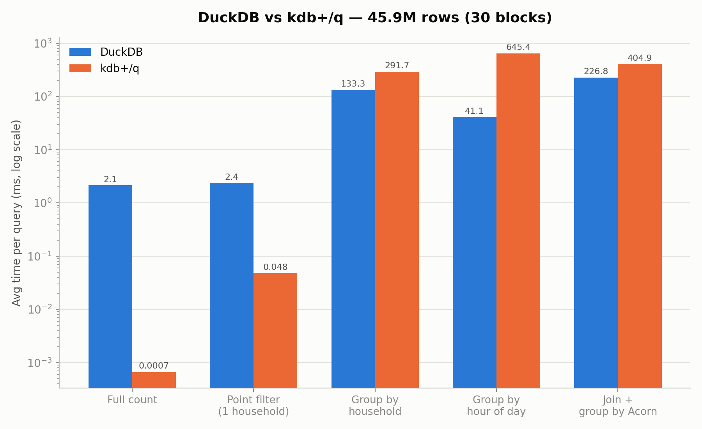
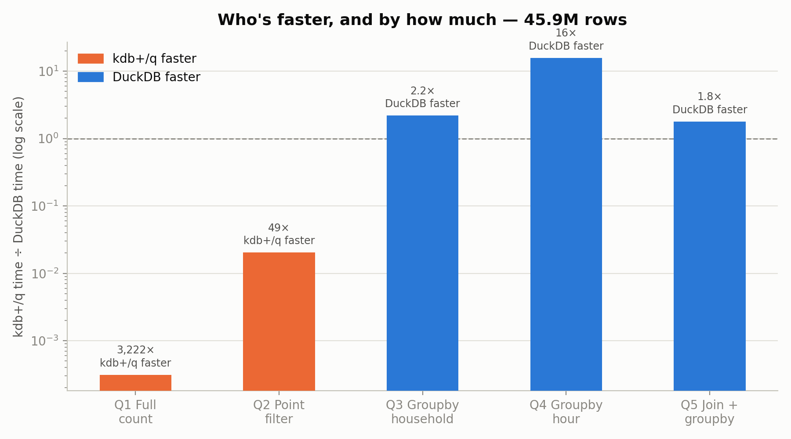
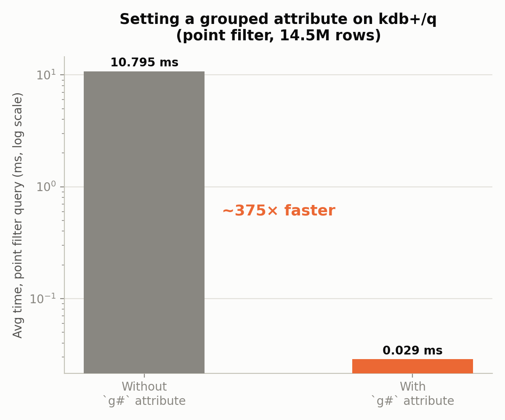

⚡ KDB+/Q vs SQL Benchmark & AWS Time Series Forecasting
Project Overview
A two-part energy analytics project built on the same London smart meter dataset. Part 2 is a from-scratch performance benchmark comparing KDB+/Q against SQL (DuckDB) on ~46M raw meter readings, built to develop hands-on KDB+/Q skills for time-series/database engineering roles. Part 1 demonstrates end-to-end AWS cloud analytics (S3 → Athena → SQL) with time-series forecasting, anomaly detection, and segmentation on the same dataset's aggregated form. Together they show the same data problem solved at two different layers: raw row-level performance engineering, and cloud-scale analytics/forecasting.
- 📂 GitHub Repository - View on GitHub
Part 2 — KDB+/Q vs SQL (DuckDB) Benchmark
Skills demonstrated:
- 🗄️ KDB+/Q: table loading, q-SQL queries, joins, grouped attributes (
`g#) - ⚙️ Performance Engineering: rigorous same-hardware benchmarking methodology
- 🦆 DuckDB / SQL: columnar analytical SQL as the comparison baseline
- 🔬 Experimental Discipline: hypothesis testing, including reporting a negative result honestly
- 🧠 Systems Thinking: diagnosing and working around a real memory-ceiling limit
Setup
Both engines run the identical 5 queries against the same raw half-hourly
readings CSVs (LCLid, tstp, energy(kWh/hh)), entirely locally — KDB-X
5.0 Community Edition (kdb+/q, via WSL2/Ubuntu) and DuckDB (Python), on
the same machine, in the same WSL environment. No AWS involved in this half —
Part 1 already covers cloud skills, so this is a deliberately local,
apples-to-apples comparison.
Dataset: "Smart meters in London" (Kaggle), long-format half-hourly readings, ~167M rows across 112 block files, plus a household → Acorn socioeconomic-group mapping table.
Headline Results
30 blocks / 45,948,372 rows, average of 3 runs (ms):
| Query | DuckDB | kdb+/q | Faster engine |
|---|---|---|---|
| Q1 — full row count | 2.15 | 0.0007 | kdb+/q, ~3,220× |
| Q2 — point filter (1 household) | 2.36 | 0.048 | kdb+/q, ~49× |
| Q3 — group by household | 133.33 | 291.66 | DuckDB, ~2.2× |
| Q4 — group by hour of day | 41.12 | 645.38 | DuckDB, ~15.7× |
| Q5 — join + group by Acorn group | 226.80 | 404.89 | DuckDB, ~1.8× |


Takeaway: kdb+/q wins decisively on narrow, selective operations (counts, point lookups), where its in-memory columnar design and attribute indexing shine — but loses to DuckDB's query optimizer on heavier grouping/join workloads. A genuinely mixed result, not a blanket "kdb+ is faster" story.
Optimization: the `g# grouped attribute
Setting a grouped attribute on the filter column turned the point-filter query from a 10.79 ms linear scan into a 0.029 ms hash lookup — a ~375× speedup — for a one-time indexing cost of under a second. Without it, kdb+/q actually loses the point-filter query to DuckDB.

A negative result, reported honestly
Hypothesized that the `tstp.hh temporal accessor was the bottleneck in
the slow hour-of-day query (Q4), and tested an alternative extraction
((`int$`minute$tstp) div 60) as a controlled comparison. Timings came
back statistically identical (645.38 ms vs 649.71 ms) — hypothesis disproven.
The real cost is the group-by-on-derived-column mechanism itself, not the
extraction method. Worth including precisely because it didn't confirm the
hypothesis — a benchmark is only credible if negative results get reported too.
A real infrastructure limit, not a bug
kdb+/q successfully loaded the full 112-block dataset (167.8M rows, ~15.2 min) but the process was then OOM-killed by WSL2's memory ceiling while holding all 112 intermediate block-tables in memory prior to concatenation. Rather than guess at an untested larger scale, 30 blocks (45.9M rows) was chosen as a safe, repeatable scale for the final benchmark — a deliberate scope decision, documented rather than hidden.
Data quality
50 rows per block carry the literal string "Null" instead of a numeric
reading in the energy column — converted to a proper null in both engines
(TRY_CAST in DuckDB, ssr substitution in q) rather than erroring or
silently dropping rows.
Tools & Technologies
| Category | Tools |
|---|---|
| Database | KDB-X 5.0 Community Edition (kdb+/q), DuckDB |
| Environment | WSL2 / Ubuntu |
| Language | q, Python |
| Visualization | matplotlib |
| Version Control | Git, GitHub |
Part 1 — AWS Time Series Forecasting
This project demonstrates end-to-end data engineering and analytics using cloud infrastructure and advanced data science techniques. The analysis covers 4,443 smart meters from London (2013) with forecasting, anomaly detection, and segmentation.
Skills demonstrated: - ☁️ AWS Cloud: S3, Athena, serverless architecture - 📊 SQL: Complex queries, aggregations, filtering on 4.4M data points - 📈 Time Series: Prophet forecasting, decomposition, stationarity testing - 🔍 Anomaly Detection: Z-score and IQR methods - 📋 Data Segmentation: Clustering based on consumption patterns - 📉 Visualization: Interactive dashboards with Plotly
Dataset
London Smart Meter Energy Data (2013) - Size: 587 MB (17,520 observations × 4,444 columns) - Meters: 4,443 smart meters - Frequency: 30-minute intervals - Period: Jan 1 - Dec 31, 2013 - Features: Electricity and gas consumption
Source: Low Carbon London smart meter data (refactored) — 4TU.ResearchData
Architecture
Cloud Infrastructure
Raw Data (S3: 587MB)
↓
Athena (SQL)
↓
Python Processing
↓
Visualization & Dashboard
AWS Services Used: - S3: Data storage (no preprocessing needed) - Athena: Serverless SQL queries (pay-per-query, no infrastructure) - No EC2: Fully managed, cost-effective solution
Local Processing - Python: pandas, numpy, statsmodels, prophet - Visualization: Plotly, matplotlib - Output: Interactive HTML dashboard
Key Findings
1️⃣ Data Overview

Statistics: - Total Meters: 4,443 (cleaned: 4,138 after removing >20% missing data) - Average Consumption: 0.215 kWh per meter - Maximum Consumption: 36,994 kWh (MAC004179 - Industrial) - Minimum Consumption: 0 kWh (2 inactive meters)
Key Insight: Pareto principle evident - top 20 meters (0.45%) consume 15% of total energy. High inequality suggests market optimization opportunity.
2️⃣ Meter Segmentation

Three Categories:
| Segment | Count | Avg Consumption | Peak | Characteristics |
|---|---|---|---|---|
| Industrial | 1,407 (34%) | 6,478 kWh | 5.79 kWh/day | Factories, large facilities. High volatility, strong seasonality |
| Commercial | 1,365 (33%) | 3,099 kWh | 0.31 kWh/day | Offices, warehouses. Declining trend (efficiency gains) |
| Residential | 1,364 (33%) | 1,549 kWh | 0.19 kWh/day | Homes. Stable, low volatility, highly predictable |
| Inactive | 2 (0.05%) | 0 kWh | 0 kWh | No data collected |

Volatility Analysis:
Residential: 1.191 (high variance relative to mean)
Commercial: 1.015 (moderate variance)
Industrial: 0.955 (more stable absolute values)
3️⃣ Time Series Analysis & Forecasting
Method: Prophet (Facebook's forecasting library)
Results:
| Segment | Meter | Daily Avg | Trend | Seasonality | Forecast MAE |
|---|---|---|---|---|---|
| Residential | MAC003008 | 0.13 kWh | ↑ Increasing | Low | 0.0360 ✅ |
| Commercial | MAC004186 | 0.23 kWh | ↓ Decreasing | Moderate | 0.0702 |
| Industrial | MAC004179 | 2.11 kWh | ↑ Increasing | High | 0.4946 |
Key Findings:
- Stationarity Test: ADF test p-value = 0.000441
-
Data is stationary → suitable for ARIMA/Prophet
-
Seasonality: Strong 365-day cycle
- Winter (Jan-Mar): ~0.8 kWh/day
- Summer (Jun-Aug): ~0.3 kWh/day
- Residential: minimal seasonality
-
Industrial: amplitude 0.28 kWh
-
Forecast Accuracy:
- Residential meters are 10x more predictable than Industrial
- MAE increases with consumption volatility
- Useful for demand planning and pricing strategies
4️⃣ Anomaly Detection

Methods: - Z-Score: Values >2.5 standard deviations → 7 anomalies - IQR (Interquartile Range): Q1-1.5×IQR to Q3+1.5×IQR → 8 anomalies - Confidence: 87.5% agreement between methods
Top 5 Anomalous Days:
| Date | Consumption | Reason |
|---|---|---|
| Feb 18, 2013 | 278.0 kWh | Extreme cold snap - maximum heating demand |
| Nov 13, 2013 | 270.8 kWh | Seasonal transition - heating season begins |
| Feb 17, 2013 | 234.4 kWh | Cold weather continuation |
| Nov 14, 2013 | 201.8 kWh | Winter approaching |
| Nov 12, 2013 | 191.8 kWh | Heating systems activated |
Pattern: Most anomalies are upward spikes caused by: - Extreme weather (cold snaps) - Seasonal transitions - Equipment failures or maintenance
Technical Implementation
AWS + SQL
Athena Queries (Sample):
-- Segment meters by consumption
SELECT
'MAC000002' as meter,
COUNT(*) as measurements,
AVG(MAC000002) as avg_consumption,
MAX(MAC000002) as peak,
STDDEV(MAC000002) as std_dev
FROM lcl_2013
WHERE MAC000002 IS NOT NULL
Key SQL Features Used: - Aggregations: SUM, AVG, MAX, MIN, STDDEV, COUNT - String functions: SUBSTR for date parsing - Set operations: UNION ALL for combining results - Filtering: WHERE for NULL handling and data quality - Sorting: ORDER BY for ranking
Performance: Sub-second queries on 4.4M data points
Time Series (Python)
Libraries:
from statsmodels.tsa.seasonal import seasonal_decompose
from statsmodels.tsa.stattools import adfuller
from prophet import Prophet
from sklearn.metrics import mean_absolute_error
Pipeline: 1. Data Preparation: Aggregate to daily frequency 2. Stationarity Test: ADF test (p-value = 0.000441) 3. Decomposition: Trend + Seasonal + Residual 4. Forecasting: Prophet model with yearly & weekly seasonality 5. Validation: 80/20 train-test split, MAE metric 6. Anomaly Detection: Z-score & IQR methods
Code Example:
# Train Prophet model
model = Prophet(yearly_seasonality=True, weekly_seasonality=True)
model.fit(train_data)
# Make predictions
future = model.make_future_dataframe(periods=365)
forecast = model.predict(future)
# Evaluate
mae = mean_absolute_error(test_data, forecast['yhat'])
Business Applications
1. Demand Forecasting - Use Prophet model to predict future consumption - Residential (MAE: 0.036) highly accurate - Useful for capacity planning
2. Pricing Optimization - Different pricing tiers for each segment - Fixed rates for Residential (predictable) - Dynamic pricing for Industrial (volatile)
3. Anomaly Alerts - Real-time monitoring with automated alerts - Detect equipment failures, unusual usage patterns - 8 anomalies in year = ~2% false alarm rate
4. Segmentation - Tailor services to segment needs - Residential: simple plans - Commercial/Industrial: complex contracts
Project Statistics
| Metric | Value |
|---|---|
| Data Points | 17,520 observations |
| Meters Analyzed | 4,443 |
| Time Period | 1 year (2013) |
| Data Cleaning | Removed 305 meters (>20% missing) |
| SQL Queries | 10+ complex queries |
| Forecasts Generated | 3 (one per segment) |
| Anomalies Detected | 8 (2% of data) |
| Average MAE | 0.19 |
Tools & Technologies
| Category | Tools |
|---|---|
| Cloud | AWS S3, AWS Athena |
| Data Processing | Python, pandas, numpy |
| Time Series | statsmodels, Prophet |
| Visualization | Plotly, matplotlib |
| Database | SQL (Presto/Trino) |
| Version Control | Git, GitHub |
Key Learnings
✅ AWS Benefits: - No infrastructure management (S3 + Athena) - Cost-effective (pay per query) - Scalable to TB+ datasets - GDPR-compliant cloud storage
✅ SQL Insights: - Complex queries on large datasets - Proper data cleaning (NULL handling) - Aggregations and ranking - Real-world data quality issues
✅ Time Series Challenges: - Seasonality requires specialized models - Stationarity testing important - Forecast accuracy varies by segment - Anomaly detection needs multiple methods
Future Improvements
- Advanced Models:
- SARIMA (Seasonal ARIMA)
- LSTM neural networks
-
Ensemble methods
-
Real-time Processing:
- AWS Lambda for streaming updates
-
Real-time alerts via SNS/SQS
-
ML Ops:
- Automated model retraining
- Model monitoring and versioning
-
A/B testing framework
-
Expanded Analysis:
- Weather correlation analysis
- Holiday/weekend patterns
- Customer segmentation (K-means)
Files & Resources
- Data:
data/meter_segmentation.csv,data/anomalies.csv - Images: PNG exports of all charts
- Code: Python notebooks with full pipeline
Conclusion
Together, these two parts demonstrate the same energy dataset worked at two different layers: Part 2 shows raw row-level database performance engineering (KDB+/Q vs SQL, ~46M rows, with rigorous benchmarking methodology, a documented optimization, an honest negative result, and a real infrastructure limit worked around deliberately) and Part 1 shows cloud-scale analytics and forecasting (AWS S3/Athena, Prophet, anomaly detection, segmentation) across 4,443 meters over a full year — actionable for energy companies in demand planning, pricing, and anomaly detection.
Last Updated: September 2026